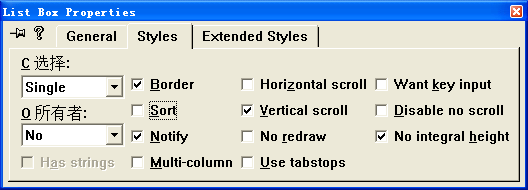

<!DOCTYPE html>


<html lang="zh-CN">


<head>
  <meta charset="utf-8" />
   
  <meta name="keywords" content="翟天野 天野 翟天野博客 tianye zhaitianye" />
   
  <meta name="description" content="The seeker of the world" />
  
  <meta name="viewport" content="width=device-width, initial-scale=1, maximum-scale=1" />
  <title>
    vc++6.0-常用控件1 |  Tianye Blog
  </title>
  <meta name="generator" content="hexo-theme-ayer">
  
  <link rel="shortcut icon" href="/favicon.ico" />
  
  
<link rel="stylesheet" href="/dist/main.css">

  
<link rel="stylesheet" href="/comm/remixicon.min.css">

  
<link rel="stylesheet" href="/css/custom.css">

  
  
<script src="/comm/pace.min.js"></script>

  
  

  

</head>

</html>

<body>
  <div id="app">
    
      
      <canvas width="1777" height="841"
        style="position: fixed; left: 0px; top: 0px; z-index: 99999; pointer-events: none;"></canvas>
      
    <main class="content on">
      <section class="outer">
  <article
  id="post-vc++6.0-常用控件1"
  class="article article-type-post"
  itemscope
  itemprop="blogPost"
  data-scroll-reveal
>
  <div class="article-inner">
    
    <header class="article-header">
       
<h1 class="article-title sea-center" style="border-left:0" itemprop="name">
  vc++6.0-常用控件1
</h1>
 

    </header>
     
    <div class="article-meta">
      <a href="/2016/03/vc++6.0-%E5%B8%B8%E7%94%A8%E6%8E%A7%E4%BB%B61/" class="article-date">
  <time datetime="2016-03-12T12:23:27.000Z" itemprop="datePublished">2016-03-12</time>
</a> 
  <div class="article-category">
    <a class="article-category-link" href="/categories/vc-6-0/">vc++6.0</a>
  </div>
  
<div class="word_count">
    <span class="post-time">
        <span class="post-meta-item-icon">
            <i class="ri-quill-pen-line"></i>
            <span class="post-meta-item-text"> 字数统计:</span>
            <span class="post-count">1.3k</span>
        </span>
    </span>

    <span class="post-time">
        &nbsp; | &nbsp;
        <span class="post-meta-item-icon">
            <i class="ri-book-open-line"></i>
            <span class="post-meta-item-text"> 阅读时长≈</span>
            <span class="post-count">5 分钟</span>
        </span>
    </span>
</div>
 
    </div>
      
    <div class="tocbot"></div>


  
    <div class="article-entry" itemprop="articleBody">
       
  <p><strong>实验目的：</strong><br>（1）创建一个默认的对话框应用程序Ex_Ctrls，如图2.1所示。<br>（2）设计一个如图2.2所示的“课程信息”对话框。 </p>
<p></p>
<p>图2.1  Ex_Ctrls对话框</p>
<p></p>
<p>图2.2  “课程信息”对话框</p>
<p>（3）实现功能：单击图2.1中的“课程信息”按钮，弹出“学生基本信息”对话框，单击“添加”按钮，对话框内容显示在图2.1中的列表框中。 <strong>实验仪器：</strong> 电脑一台(CPU：Inter(R) Xeon(R) E3-1230 v3 @ 3.3GHz 内存：8.0GB   操作系统：Win8.1虚拟机xp 使用软件：Vc++ 6.0) <strong>实验步骤（或程序清单：）</strong></p>
<h5 id="1-．启动Visual-C-6-0"><a href="#1-．启动Visual-C-6-0" class="headerlink" title="1**．启动Visual C++ 6.0**"></a><strong>1**</strong>．<strong>启动</strong>Visual C++ 6.0**</h5><p>打开计算机，启动Visual C++ 6.0系统。 </p>
<p></p>
<h5 id="2-．创建一个默认的对话框应用程序Ex-Ctrls"><a href="#2-．创建一个默认的对话框应用程序Ex-Ctrls" class="headerlink" title="2**．创建一个默认的对话框应用程序Ex_Ctrls**"></a><strong>2**</strong>．<strong>创建一个默认的对话框应用程序</strong>Ex_Ctrls**</h5><p>① 选择“文件”→“新建”菜单，在弹出的“新建”对话框中选择“工程”页面，选择MFC AppWizard（exe），在工程框中输入Ex_Ctrls，并将工程文件夹定位到“…\Visual C++程序\实验\实验2”。<br></p>
<p>② 单击“确定”按钮，在出现的Step 1对话框中选择“基本对话（框）”应用程序类型，单击“完成”按钮。 </p>
<p></p>
<p>③ 在对话框编辑器中，单击对话框工具栏上的切换网格按钮，显示对话框网格，将对话框标题改为“使用控件”。 </p>
<p></p>
<p>④ 调整对话框的大小，删除对话框中间的“TODO: 在这里设置对话控制。”静态文本控件和“确定”按钮控件，将“取消”按钮标题改为“退出”，并移至对话框的下方。 ⑤ 向对话框中添加组框（Group）控件，标题设为“添加”，然后调整其大小和位置。 </p>
<p></p>
<p>⑥ 添加一个按钮，标题设为“课程信息”，ID设为IDC_BUTTON_COURSE。 </p>
<p></p>
<p>⑦ 添加一个列表框，取其默认ID号，去掉Sort风格属性。 </p>
<p></p>
<h5 id="3-．-添加并设计“课程信息”对话框"><a href="#3-．-添加并设计“课程信息”对话框" class="headerlink" title="3**．**添加并设计“课程信息”对话框"></a><strong>3**</strong>．**添加并设计“课程信息”对话框</h5><p>① 按Ctrl+R快捷键，弹出“插入资源”对话框，在资源类型列表中选择Dialog，单击“新建”按钮。 </p>
<p></p>
<p>) ② 将该对话框资源的ID设为IDD_COURSE，标题设为“课程信息”，字体设为“宋体，9号”。 </p>
<p></p>
<p>③ 将OK和Cancel按钮的标题改为“添加”和“取消”。 </p>
<p></p>
<p>④ 打开对话框网格，参看图2.2的控件布局，为对话框添加如表2.1所示的一些控件。</p>
<p>表<strong>2.1</strong>  课程信息对话框添加的控件</p>
<p>添加的控件</p>
<p><strong>ID</strong>号</p>
<p>标    题</p>
<p>其 他 属 性</p>
<p>编辑框(课程号)</p>
<p>IDC_EDIT_COURSENO</p>
<p>——</p>
<p>默认</p>
<p>编辑框(课程名称)</p>
<p>IDC_EDIT_COURSENAME</p>
<p>——</p>
<p>默认</p>
<p>组合框(所属专业)</p>
<p>IDC_COMBO_SPECIAL</p>
<p>——</p>
<p>默认</p>
<p>组合框(课程类型)</p>
<p>IDC_COMBO_TYPE</p>
<p>——</p>
<p>默认</p>
<p>编辑框(开课学期)</p>
<p>IDC_EDIT_OPEN</p>
<p>——</p>
<p>默认</p>
<p>旋转按钮</p>
<p>IDC_SPIN1</p>
<p>——</p>
<p>Auto buddy、Set buddy integer、Right对齐，其余默认</p>
<p>编辑框(课时数)</p>
<p>IDC_EDIT_COURSEHOURS</p>
<p>——</p>
<p>默认</p>
<p>编辑框(学分)</p>
<p>IDC_EDIT_CREDIT</p>
<p>——</p>
<p>默认</p>
<p></p>
<p>⑤ 右击添加的课程类型的组合框控件，从弹出的快捷菜单中选择“属性”命令，将其属性对话框切换到Data页面，直接输入内容，输入一行后按Ctrl+Return键添加另一行。<br></p>
<p>⑥ 按Ctrl+W快捷键或双击对话框资源模板的空白处，为IDD_COURSE创建一个对话框CCourseDlg </p>
<p></p>
<p></p>
<p>⑦ 打开ClassWizard的Member Variables页面，看Class name是否是CCourseDlg，选中所需的控件ID号，双击鼠标。依次为表2.2控件增加成员变量。</p>
<p>表<strong>2.2</strong>  控件变量</p>
<p>控件<strong>ID</strong>号</p>
<p>变量类别</p>
<p>变量类型</p>
<p>变量名</p>
<p>范围和大小</p>
<p>IDC_EDIT_COURSENO</p>
<p>Value</p>
<p>CString</p>
<p>m_strNO</p>
<p>IDC_EDIT_COURSENAME</p>
<p>Value</p>
<p>CString</p>
<p>m_strName</p>
<p>IDC_COMBO_SPECIAL</p>
<p>Value</p>
<p>CString</p>
<p>m_strSpecial</p>
<p>IDC_COMBO_SPECIAL</p>
<p>Control</p>
<p>CComboBox</p>
<p>m_comboSpecial</p>
<p>——</p>
<p>IDC_COMBO_TYPE</p>
<p>Value</p>
<p>CString</p>
<p>m_strType</p>
<p>IDC_EDIT_OPEN</p>
<p>Value</p>
<p>BYTE</p>
<p>m_nOpen</p>
<p>IDC_SPIN1</p>
<p>Control</p>
<p>CSpinButtonCtrl</p>
<p>m_spinOpen</p>
<p>——</p>
<p>IDC_EDIT_COURSEHOURS</p>
<p>Value</p>
<p>int</p>
<p>m_nHours</p>
<p>IDC_EDIT_CREDIT</p>
<p>Value</p>
<p>float</p>
<p>m_fCredit</p>
<p></p>
<h5 id="4-．添加CCourseDlg-类代码"><a href="#4-．添加CCourseDlg-类代码" class="headerlink" title="4**．添加CCourseDlg**类代码"></a><strong>4**</strong>．<strong>添加</strong>CCourseDlg**类代码</h5><p>① 用MFC ClassWizard为CCourseDlg类添加WM_INITDIALOG消息映射，并添加下列初始化代码：  </p>
<figure class="highlight cpp"><table><tr><td class="gutter"><pre><span class="line">1</span><br><span class="line">2</span><br><span class="line">3</span><br><span class="line">4</span><br><span class="line">5</span><br><span class="line">6</span><br><span class="line">7</span><br><span class="line">8</span><br><span class="line">9</span><br><span class="line">10</span><br><span class="line">11</span><br><span class="line">12</span><br><span class="line">13</span><br><span class="line">14</span><br><span class="line">15</span><br><span class="line">16</span><br><span class="line">17</span><br><span class="line">18</span><br></pre></td><td class="code"><pre><span class="line"><span class="function">BOOL <span class="title">CCourseDlg::OnInitDialog</span><span class="params">()</span></span></span><br><span class="line"><span class="function"></span></span><br><span class="line"><span class="function"></span>&#123;</span><br><span class="line"></span><br><span class="line">         CDialog::OnInitDialog();</span><br><span class="line">         m_spinOpen.SetRange( <span class="number">1</span>, <span class="number">8</span> );</span><br><span class="line">         m_nHours = <span class="number">60</span>;</span><br><span class="line">         m_fCredit = <span class="number">2.0</span>;</span><br><span class="line">         m_nOpen = <span class="number">1</span>;</span><br><span class="line">         m_strType = <span class="string">"专修"</span>;</span><br><span class="line">         <span class="comment">// 这里对专业组合框进行初如化</span></span><br><span class="line">         m_comboSpecial.AddString( <span class="string">"机械工程及其自动化"</span> );</span><br><span class="line">         m_comboSpecial.AddString( <span class="string">"电气工程及其自动化"</span> );</span><br><span class="line">         m_strSpecial = <span class="string">"机械工程及其自动化"</span>;</span><br><span class="line">         UpdateData(FALSE);</span><br><span class="line">                  <span class="keyword">return</span> TRUE;  <span class="comment">// return TRUE unless you set the focus to a control</span></span><br><span class="line"></span><br><span class="line">&#125;</span><br></pre></td></tr></table></figure>
<p></p>
<p>② 用MFC ClassWizard为按钮IDOK添加BN_CLICKED的消息映射，并增加下列      代码：  </p>
<figure class="highlight cpp"><table><tr><td class="gutter"><pre><span class="line">1</span><br><span class="line">2</span><br><span class="line">3</span><br><span class="line">4</span><br><span class="line">5</span><br><span class="line">6</span><br><span class="line">7</span><br><span class="line">8</span><br><span class="line">9</span><br><span class="line">10</span><br><span class="line">11</span><br><span class="line">12</span><br><span class="line">13</span><br><span class="line">14</span><br><span class="line">15</span><br><span class="line">16</span><br></pre></td><td class="code"><pre><span class="line"><span class="function"><span class="keyword">void</span> <span class="title">CCourseDlg::OnOK</span><span class="params">()</span></span></span><br><span class="line"><span class="function"></span></span><br><span class="line"><span class="function"></span>&#123;</span><br><span class="line"></span><br><span class="line">         UpdateData();</span><br><span class="line">         m_strNO.TrimLeft();</span><br><span class="line">         <span class="keyword">if</span> (m_strNO.IsEmpty())         &#123;</span><br><span class="line">                  MessageBox(<span class="string">"课程号不能为空！"</span>);               <span class="keyword">return</span>;</span><br><span class="line">         &#125;</span><br><span class="line">         m_strName.TrimLeft();</span><br><span class="line">         <span class="keyword">if</span> (m_strName.IsEmpty())     &#123;</span><br><span class="line">                 MessageBox(<span class="string">"课程名称不能为空！"</span>);           <span class="keyword">return</span>;</span><br><span class="line">         &#125;</span><br><span class="line">         CDialog::OnOK();</span><br><span class="line"></span><br><span class="line">&#125;</span><br></pre></td></tr></table></figure>
<p></p>
<h5 id="5-．添加CEx-CtrlsDlg-程序代码"><a href="#5-．添加CEx-CtrlsDlg-程序代码" class="headerlink" title="5**．添加CEx_CtrlsDlg**程序代码"></a><strong>5**</strong>．<strong>添加</strong>CEx_CtrlsDlg**程序代码</h5><p>① 按Ctrl+W快捷键，打开MFC ClassWizard对话框，为列表框控件IDC_LIST1添加控件变量m_List，类型为CListBox。</p>
<p></p>
<p>② 用MFC ClassWizard为按钮IDC_BUTTON_COURSE添加BN_CLICKED消息映射，并添加下列代码：  </p>
<figure class="highlight cpp"><table><tr><td class="gutter"><pre><span class="line">1</span><br><span class="line">2</span><br><span class="line">3</span><br><span class="line">4</span><br><span class="line">5</span><br><span class="line">6</span><br><span class="line">7</span><br><span class="line">8</span><br><span class="line">9</span><br><span class="line">10</span><br><span class="line">11</span><br><span class="line">12</span><br><span class="line">13</span><br><span class="line">14</span><br><span class="line">15</span><br><span class="line">16</span><br><span class="line">17</span><br><span class="line">18</span><br><span class="line">19</span><br></pre></td><td class="code"><pre><span class="line"><span class="function"><span class="keyword">void</span> <span class="title">CEx_CtrlsDlg::OnButtonCourse</span><span class="params">()</span></span></span><br><span class="line"><span class="function"></span></span><br><span class="line"><span class="function"></span>&#123;</span><br><span class="line">         CCourseDlg dlg;</span><br><span class="line">         <span class="keyword">if</span> (IDOK != dlg.DoModal()) <span class="keyword">return</span>;</span><br><span class="line">         <span class="comment">// 清除列表框原来的显示内容</span></span><br><span class="line">         <span class="keyword">while</span>(m\_List.GetCount()!=<span class="number">0</span>) m\_List.DeleteString(<span class="number">0</span>);</span><br><span class="line">         m\_List.AddString( <span class="string">"课 程 号："</span>+dlg.m\_strNO);</span><br><span class="line">         m\_List.AddString( <span class="string">"课程名称："</span>+dlg.m\_strName);</span><br><span class="line">         m\_List.AddString( <span class="string">"所属专业："</span>+dlg.m\_strSpecial);</span><br><span class="line">         m\_List.AddString( <span class="string">"课程类型："</span>+dlg.m\_strType);</span><br><span class="line">         CString str;</span><br><span class="line">         str.Format(<span class="string">"开课学期：%d"</span>, dlg.m_nOpen );</span><br><span class="line">         m_List.AddString( str );</span><br><span class="line">         str.Format(<span class="string">"课 时 数：%d"</span>, dlg.m_nHours );</span><br><span class="line">         m_List.AddString( str );</span><br><span class="line">         str.Format(<span class="string">"学    分：%4.1f"</span>, dlg.m_fCredit);</span><br><span class="line">         m_List.AddString( str );       </span><br><span class="line">&#125;</span><br></pre></td></tr></table></figure>
<p>③ 在Ex_CtrlsDlg.cpp文件的前面添加CInputDlg的头文件包含：</p>
<figure class="highlight cpp"><table><tr><td class="gutter"><pre><span class="line">1</span><br><span class="line">2</span><br></pre></td><td class="code"><pre><span class="line"><span class="meta">#<span class="meta-keyword">include</span> <span class="meta-string">"Ex_CtrlsDlg.h"</span></span></span><br><span class="line"><span class="meta">#<span class="meta-keyword">include</span> <span class="meta-string">"CourseDlg.h"</span></span></span><br></pre></td></tr></table></figure>
<p></p>
<p>④ 编译运行并测试。</p>
<h5 id="6-．-写出实验报告"><a href="#6-．-写出实验报告" class="headerlink" title="6**．**写出实验报告"></a><strong>6**</strong>．**写出实验报告</h5><p>分析上述运行结果以及思考与练习，写出实验报告。<br></p>
<p></p>
<p><strong>实验结果分析</strong> 知道了控件的基本操作，添加控件和修改代码，调整控件位置。</p>
 
      <!-- reward -->
      
    </div>
    

    <!-- copyright -->
    
    <div class="declare">
      <ul class="post-copyright">
        <li>
          <i class="ri-copyright-line"></i>
          <strong>版权声明： </strong>
          本博客所有文章，未经许可，任何单位及个人不得做营利性使用！如有侵权请联系作者。
        </li>
      </ul>
    </div>
    
    <footer class="article-footer">
       
  <ul class="article-tag-list" itemprop="keywords"><li class="article-tag-list-item"><a class="article-tag-list-link" href="/tags/vc-6-0/" rel="tag">vc++6.0</a></li></ul>

    </footer>
  </div>

   
  <nav class="article-nav">
    
      <a href="/2016/03/vc++6.0-%E5%B8%B8%E7%94%A8%E6%8E%A7%E4%BB%B62/" class="article-nav-link">
        <strong class="article-nav-caption">上一篇</strong>
        <div class="article-nav-title">
          
            vc++6.0-常用控件2
          
        </div>
      </a>
    
    
      <a href="/2016/03/vc++6.0-Windows%E7%BC%96%E7%A8%8B%E5%9F%BA%E7%A1%80/" class="article-nav-link">
        <strong class="article-nav-caption">下一篇</strong>
        <div class="article-nav-title">vc++6.0-Windows编程基础</div>
      </a>
    
  </nav>

  
     
</article>

</section>
      <footer class="footer">
  <div class="outer">
    <ul>
      <li>
        Copyrights &copy;
        2015-2020
        <i class="ri-heart-fill heart_icon"></i> 翟天野
      </li>
    </ul>
    <ul>
      <li>
        
      </li>
    </ul>
    <ul>
      <li>
        
      </li>
    </ul>
    <ul>
      
    </ul>
    <ul>
      <li>
        <!-- cnzz统计 -->
        
      </li>
    </ul>
  </div>
</footer>
      <div class="float_btns">
        <div class="totop" id="totop">
  <i class="ri-arrow-up-line"></i>
</div>

<div class="todark" id="todark">
  <i class="ri-moon-line"></i>
</div>

      </div>
    </main>
    <aside class="sidebar on">
      <button class="navbar-toggle"></button>
<nav class="navbar">
  
  <div class="logo">
    <a href="/"></a>
  </div>
  
  <ul class="nav nav-main">
    
    <li class="nav-item">
      <a class="nav-item-link" href="/">主页</a>
    </li>
    
    <li class="nav-item">
      <a class="nav-item-link" href="/archives">归档</a>
    </li>
    
    <li class="nav-item">
      <a class="nav-item-link" href="/categories">分类</a>
    </li>
    
    <li class="nav-item">
      <a class="nav-item-link" href="/tags">标签</a>
    </li>
    
    <li class="nav-item">
      <a class="nav-item-link" href="/about">关于</a>
    </li>
    
  </ul>
</nav>
<nav class="navbar navbar-bottom">
  <ul class="nav">
    <li class="nav-item">
      
      
    </li>
  </ul>
</nav>
<div class="search-form-wrap">
  <div class="local-search local-search-plugin">
  <input type="search" id="local-search-input" class="local-search-input" placeholder="Search...">
  <div id="local-search-result" class="local-search-result"></div>
</div>
</div>
    </aside>
    <script>
      if (window.matchMedia("(max-width: 768px)").matches) {
        document.querySelector('.content').classList.remove('on');
        document.querySelector('.sidebar').classList.remove('on');
      }
    </script>
    <div id="mask"></div>

<!-- #reward -->
<div id="reward">
  <span class="close"><i class="ri-close-line"></i></span>
  <p class="reward-p"><i class="ri-cup-line"></i>请我喝杯咖啡吧~</p>
  <div class="reward-box">
    
    
  </div>
</div>
    
<script src="/js/jquery-2.0.3.min.js"></script>


<script src="/js/lazyload.min.js"></script>


<!-- Tocbot -->


<script src="/js/tocbot.min.js"></script>

<script>
  
  if(document.getElementsByClassName("tocbot").length !== 0){
    tocbot.init({
      tocSelector: '.tocbot',
      contentSelector: '.article-entry',
      headingSelector: 'h1, h2, h3, h4, h5, h6',
      hasInnerContainers: true,
      scrollSmooth: true,
      scrollContainer: 'main',
      positionFixedSelector: '.tocbot',
      positionFixedClass: 'is-position-fixed',
      fixedSidebarOffset: 'auto'
    });
  }
</script>

<script src="/comm/jquery.modal.min.js"></script>
<link rel="stylesheet" href="/comm/jquery.modal.min.css">
<script src="/comm/jquery.justifiedGallery.min.js"></script>

<script src="/dist/main.js"></script>

<!-- ImageViewer -->

<!-- Root element of PhotoSwipe. Must have class pswp. -->
<div class="pswp" tabindex="-1" role="dialog" aria-hidden="true">

    <!-- Background of PhotoSwipe. 
         It's a separate element as animating opacity is faster than rgba(). -->
    <div class="pswp__bg"></div>

    <!-- Slides wrapper with overflow:hidden. -->
    <div class="pswp__scroll-wrap">

        <!-- Container that holds slides. 
            PhotoSwipe keeps only 3 of them in the DOM to save memory.
            Don't modify these 3 pswp__item elements, data is added later on. -->
        <div class="pswp__container">
            <div class="pswp__item"></div>
            <div class="pswp__item"></div>
            <div class="pswp__item"></div>
        </div>

        <!-- Default (PhotoSwipeUI_Default) interface on top of sliding area. Can be changed. -->
        <div class="pswp__ui pswp__ui--hidden">

            <div class="pswp__top-bar">

                <!--  Controls are self-explanatory. Order can be changed. -->

                <div class="pswp__counter"></div>

                <button class="pswp__button pswp__button--close" title="Close (Esc)"></button>

                <button class="pswp__button pswp__button--share" style="display:none" title="Share"></button>

                <button class="pswp__button pswp__button--fs" title="Toggle fullscreen"></button>

                <button class="pswp__button pswp__button--zoom" title="Zoom in/out"></button>

                <!-- Preloader demo http://codepen.io/dimsemenov/pen/yyBWoR -->
                <!-- element will get class pswp__preloader--active when preloader is running -->
                <div class="pswp__preloader">
                    <div class="pswp__preloader__icn">
                        <div class="pswp__preloader__cut">
                            <div class="pswp__preloader__donut"></div>
                        </div>
                    </div>
                </div>
            </div>

            <div class="pswp__share-modal pswp__share-modal--hidden pswp__single-tap">
                <div class="pswp__share-tooltip"></div>
            </div>

            <button class="pswp__button pswp__button--arrow--left" title="Previous (arrow left)">
            </button>

            <button class="pswp__button pswp__button--arrow--right" title="Next (arrow right)">
            </button>

            <div class="pswp__caption">
                <div class="pswp__caption__center"></div>
            </div>

        </div>

    </div>

</div>

<link rel="stylesheet" href="/comm/photoswipe_dist/photoswipe.css">
<link rel="stylesheet" href="/comm/photoswipe_dist/default-skin/default-skin.css">
<script src="/comm/photoswipe_dist/photoswipe.min.js"></script>
<script src="/comm/photoswipe_dist/photoswipe-ui-default.min.js"></script>

<script>
    function viewer_init() {
        let pswpElement = document.querySelectorAll('.pswp')[0];
        let $imgArr = document.querySelectorAll(('.article-entry img:not(.reward-img)'))

        $imgArr.forEach(($em, i) => {
            $em.onclick = () => {
                // slider展开状态
                // todo: 这样不好，后面改成状态
                if (document.querySelector('.left-col.show')) return
                let items = []
                $imgArr.forEach(($em2, i2) => {
                    let img = $em2.getAttribute('data-idx', i2)
                    let src = $em2.getAttribute('data-target') || $em2.getAttribute('src')
                    let title = $em2.getAttribute('alt')
                    // 获得原图尺寸
                    const image = new Image()
                    image.src = src
                    items.push({
                        src: src,
                        w: image.width || $em2.width,
                        h: image.height || $em2.height,
                        title: title
                    })
                })
                var gallery = new PhotoSwipe(pswpElement, PhotoSwipeUI_Default, items, {
                    index: parseInt(i)
                });
                gallery.init()
            }
        })
    }
    viewer_init()
</script>

<!-- MathJax -->

<!-- Katex -->

<!-- busuanzi  -->

<!-- ClickLove -->

<!-- ClickBoom1 -->

<!-- ClickBoom2 -->


<script src="/js/clickBoom2.js"></script>


<!-- CodeCopy -->


<link rel="stylesheet" href="/css/clipboard.css">

<script src="/comm/clipboard.min.js"></script>
<script>
  function wait(callback, seconds) {
    var timelag = null;
    timelag = window.setTimeout(callback, seconds);
  }
  !function (e, t, a) {
    var initCopyCode = function(){
      var copyHtml = '';
      copyHtml += '<button class="btn-copy" data-clipboard-snippet="">';
      copyHtml += '<i class="ri-file-copy-2-line"></i><span>COPY</span>';
      copyHtml += '</button>';
      $(".highlight .code pre").before(copyHtml);
      $(".article pre code").before(copyHtml);
      var clipboard = new ClipboardJS('.btn-copy', {
        target: function(trigger) {
          return trigger.nextElementSibling;
        }
      });
      clipboard.on('success', function(e) {
        let $btn = $(e.trigger);
        $btn.addClass('copied');
        let $icon = $($btn.find('i'));
        $icon.removeClass('ri-file-copy-2-line');
        $icon.addClass('ri-checkbox-circle-line');
        let $span = $($btn.find('span'));
        $span[0].innerText = 'COPIED';
        
        wait(function () { // 等待两秒钟后恢复
          $icon.removeClass('ri-checkbox-circle-line');
          $icon.addClass('ri-file-copy-2-line');
          $span[0].innerText = 'COPY';
        }, 2000);
      });
      clipboard.on('error', function(e) {
        e.clearSelection();
        let $btn = $(e.trigger);
        $btn.addClass('copy-failed');
        let $icon = $($btn.find('i'));
        $icon.removeClass('ri-file-copy-2-line');
        $icon.addClass('ri-time-line');
        let $span = $($btn.find('span'));
        $span[0].innerText = 'COPY FAILED';
        
        wait(function () { // 等待两秒钟后恢复
          $icon.removeClass('ri-time-line');
          $icon.addClass('ri-file-copy-2-line');
          $span[0].innerText = 'COPY';
        }, 2000);
      });
    }
    initCopyCode();
  }(window, document);
</script>


<!-- CanvasBackground -->


    
  </div>
</body>

</html>